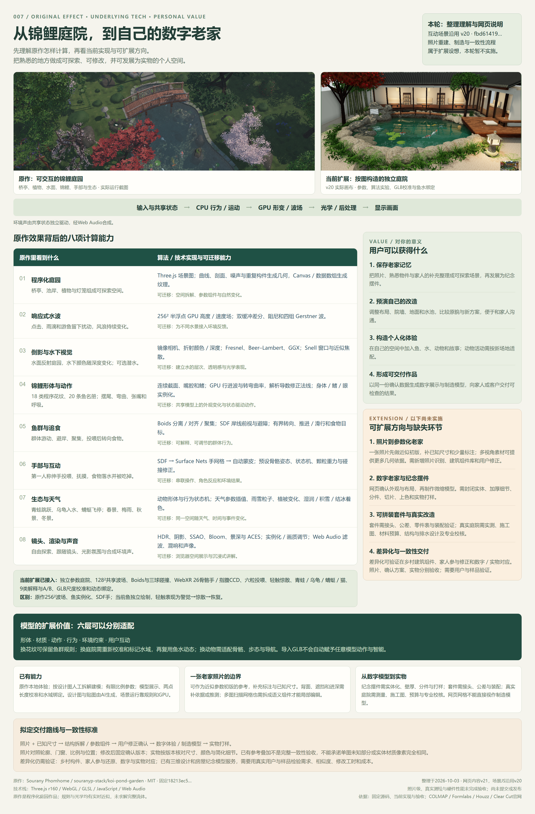

保存老家记忆
把照片、熟悉物件与家人的补充整理成可探索场景，再发展为纪念摆件。
GUIDED DEMO
操作会切换镜头与播放状态。鱼群 A/B 会替换旧实验结果、清空互动和投喂，生成结果后暂停。退出导览保留当前场景。
步骤位置表示浏览进度；效果需要通过实际操作观察。位置仅在当前页面内保留，刷新或离开页面会重置。
01 / ORIGINAL EXPERIENCE
实时水面、自由镜头和有生命感的互动。原作场景在浏览器中实时运行。
02 / IMAGE TO REALTIME SCENE
白墙灰瓦、枫树、瀑布、小桥与木平台。拖动视角，从不同位置检查构造。
03 / TECHNIQUE & PRACTICE
原作效果与底层计算、当前实现、个人价值与扩展设想，逐项对应。
ORIGINAL → PRINCIPLES → PERSONAL VALUE
先看原作效果，再理解计算方法；当前能力与扩展设想分别说明。

水波、倒影、鱼群、手部、生态动物、天气、镜头和声音共同组成体验。庭园由程序几何与纹理构造，JavaScript 更新行为，GPU 绘制形变与光影；运行时不调用语言模型。
原作提供春景、梅雨、秋景、冬景四种环境预设，以及默认关闭的可选潜水；18 类花纹对应20条原始鱼名册。
来源：Sourany Phomhome · MIT · commit 18213ec5…；运行副本仅将两条依赖地址替换为本地文件。
环境声由共享状态独立驱动，经Web Audio合成。
| 原作里看到什么 | 底层技术 | 可扩展能力 |
|---|---|---|
| 程序化庭园桥亭、池岸、植物与灯笼组成可探索空间。 | Three.js 场景图；曲线、剖面、噪声与重复构件生成几何，Canvas / 数据数组生成纹理。 | 空间拆解、参数组件与自然变化。 |
| 响应式水波点击、雨滴和游鱼留下扰动，风浪持续变化。 | 256² 半浮点 GPU 高度 / 速度场；双缓冲差分、阻尼和四组 Gerstner 波。 | 为不同水景接入环境反馈。 |
| 倒影与水下视觉水面反射庭园，水下颜色随深度变化；可选潜水。 | 镜像相机、折射颜色 / 深度；Fresnel、Beer–Lambert、GGX；Snell 窗口与近似焦散。 | 建立水的层次、透明感与光学表现。 |
| 锦鲤形体与动作18 类程序花纹、20 条鱼名册；摆尾、弯曲、张嘴和呼吸。 | 连续截面、嘴腔和鳍；GPU 行进波与转弯曲率，解析导数修正法线；身体 / 鳍 / 眼实例化。 | 共享模型上的外观变化与状态驱动动作。 |
| 鱼群与追食群体游动、避岸、聚集，投喂后转向食物。 | Boids 分离 / 对齐 / 聚集；SDF 岸线前视与避障；有界转向、推进 / 滑行和食物目标。 | 可解释、可调节的群体行为。 |
| 手部与互动第一人称伸手投喂、抚摸，食物落水并被吃掉。 | SDF → Surface Nets 手网格 → 自动蒙皮；预设骨骼姿态、状态机、颗粒重力与碰撞修正。 | 串联操作、角色反应和环境结果。 |
| 生态与天气青蛙跳跃、乌龟入水、蜻蜓飞停；春景、梅雨、秋景、冬景。 | 动物形体与行为状态机；天气参数插值、雨雪粒子、植被变化、湿润 / 积雪 / 结冰着色。 | 同一空间随天气、时间与事件变化。 |
| 镜头、渲染与声音自由探索、跟随镜头、光影氛围与合成环境声。 | HDR、阴影、SSAO、Bloom、景深与 ACES；实例化 / 画质调节；Web Audio 滤波、混响和声像。 | 浏览器空间展示与沉浸式讲解。 |
原作与当前庭院有区别：原作波场256²、鱼用实例化、手由SDF生成；当前庭院波场128²、鱼独立绘制，手用WebXR派生26骨骼网格与指腹CCD。当前轻触表现为警觉、惊散和恢复；原作抚摸会引导温顺鱼配合。
VALUE FOR YOU
以下是用户价值与后续方向；照片重建和实物交付本轮暂不实施。
把照片、熟悉物件与家人的补充整理成可探索场景，再发展为纪念摆件。
调整布局、院墙、地面和水池，比较原貌与新方案，便于和家人沟通。
在自己的空间中加入鱼、水、动物和故事；动物活动需按新场地适配。
以同一份确认数据生成数字展示与制造模型，向家人或客户交付可检查的结果。
形体、材质、动作、行为、环境约束与互动入口可以分层适配。例如换鱼花纹可以保留游动规则；换庭院后重新校准与标记水域，可复用鱼水动态；换四足动物需要适配骨骼比例和步态。GLB导入不会自动给任意动物装骨骼或导航。
一张照片先做近似初版，补已知尺寸和少量标注；多视角素材可提供更多几何依据。需新增照片识别、建筑组件库和用户修正。
网页确认外观与布局，再制作微缩模型。需封闭实体、加厚细节、分件、切片、上色和实物打样。
套件需接头、公差、零件表与装配验证；真实庭院需实测、施工图、材料预算、结构与排水设计及专业校核。
差异化可验证在乡村建筑组件、家人参与修正和数字 / 实物对应。照片、确认方案、实物分别验收；需要用户与样品验证。
它可以作为可参数调整的近似初版依据：拆解房屋、屋顶、门窗、院墙与地面，再让用户修正。单图看不到的背面、遮挡和真实进深需要补充或推测，并明确标记；多图重建所得网格也不会自动变成可编辑的墙、窗和屋顶。
拟定路径：照片与已知尺寸 → 人工 / 辅助结构拆解 → 参数组件 → 用户修改确认 → 数字体验 / 制造模型 → 实物打样。
| 能力 | 状态 | 具体范围 |
|---|---|---|
| 原作体验 | 已实现 | 固定 MIT 快照在本地运行，保留原作效果与代码。 |
| 按图构造与解释 | 已实现 | 独立庭院、部分比例参数、9 类说明、A/B、投喂、惊散与动物。 |
| 真实模型接入 | 已实现 | 单文件 GLB 展示、两点长度校准、水域标记及鱼水绑定。 |
| 任意照片自动转参数 | 扩展设想 | 尚无自动识别或通用建筑编辑器；当前按图人工拆解建模。 |
| 图片 / 方案 / 实物验收 | 扩展设想 | 已有参考图叠加；完整照片匹配、制造输出和实体打样未接入。 |
照片与三维场景核对轮廓、门窗、比例和主要物件位置；用户修改后固定确认版本；实体按该版本检查尺寸、零件、颜色与简化细节。已有参考图叠加不是完整一致性验收，也不能承诺单图未知部分或实体材质与照片像素完全相同。
展示模型进入制造前，需要检查封闭体、壁厚、分件、公差与切片，动画和透明水面要另作实体设计。当前网页没有STL / 3MF / CAD制造输出；真实庭院施工需要另行专业设计。
差异化仍需验证。可编辑三维设计与房屋纪念模型已有现有服务。可围绕家人参与还原、乡村构件、数字与实物对应验证用户需求、修改工时、相似度和交付成本。参考：Houzz三维设计 · 房屋纪念模型服务 · 建筑模型制造流程 · 多视角重建。

下载高清图片原作把一个完整庭院放进单个 HTML：JavaScript 更新状态，GPU 计算材质与光影，Web Audio 合成环境声。本页把这些方法接入独立庭院，并区分原作方法、本页实现与实时近似的边界。先观察画面，再沿着计算链理解效果。
交互与共享状态 → 行为与运动 → 几何变形 → 水与光 → 后处理与画面
下面的“本页已接入”对应当前可操作场景；原作保留在第一个页面，可直接对照。
| 观察效果 | 原作技术 | 本页已接入 | 实时近似边界 |
|---|---|---|---|
| 鱼群游动与聚集增加鱼数，再投喂 | Boids 分离、对齐、聚集，避岸与运动约束。 | 邻鱼方向与群体中心共同引导；以 128 段多边形岸线的距离和梯度避岸；限制转向加速度，交替推进和滑行；三个碰撞球避让鱼体。 | 局部规则驱动的行为模拟；岸线和碰撞体简化了真实形状。 |
| 弯曲鱼身与连续反光近看转弯与摆尾 | 行进波、转弯曲率，解析导数修正法线。 | 摆动从前向尾部传播，转弯时加入弯曲；修正脊柱弯曲和成对鱼鳍旋转的法线，使高光跟随形变。 | 微小鳍膜、口唇和背鳍折叠的法线仍为近似；鳞片细节由着色器生成，并用屏幕导数估算像素占地，远处混合平均值以减少闪烁。 |
| 水波、倒影与水色点击水面，调节风和清澈度 | 256² GPU 波动模拟，四组 Gerstner 波；Fresnel、Beer–Lambert 与反射、折射。 | 128² 双缓冲高度与速度纹理、固定步长差分和池岸遮罩；四组 Gerstner 波、解析法线、GGX 日光高光与水下深度。 | 平面倒影、有限网格波；池底光斑为程序化近似。浮点目标不可用时回退为解析涟漪。 |
| 投喂、落水与吞食观察六粒饲料的去向 | SDF 手部、网格提取与蒙皮，动作阶段和食物状态联动。 | WebXR 26 骨骼手和指腹 CCD 求解；六粒饲料按重力落水，鱼嘴位置触发吸入、闭嘴与涟漪。 | 手部动作与接触采用运动学，吞食按距离判定；CPU 浮料采样解析风浪与差分波镜像；GPU 半浮点会有微小精度差。 |
| 连续动物形体与庭院近看青蛙，切换水面网格 | SDF 平滑融合、Surface Nets、参数曲线与程序化材质。 | 青蛙和乌龟主体用距离场生成曲面；蜻蜓用分段几何与曲面翅膀；鱼用身体截面建模，庭院按参数构造。 | 场景尺寸是设计估值，真实地点需照片、扫描和尺度校准。 |
| 光照与画面质感切换下午、黄昏和雨后 | PBR 材质、阴影、环境遮蔽、辉光与色调映射。 | 日照与雾联动，SSAO 补充接触暗部，Bloom 处理亮部，ACES 压缩高动态亮度。 | 使用实时阴影与屏幕空间后处理；雨后预设表示湿润氛围。 |
| 可交互的实时画面观察实时渲染统计 | 实例化、纹理图集、动态实例参数与自适应画质。 | 树叶实例化，静态几何合并；鱼共享基础几何，独立绘制；远景与近景使用不同水面采样分辨率。 | 绘制次数、三角形和采样分辨率共同决定开销；帧率受设备与画面影响。 |
01 / CONTROLLED EXPERIMENT
在场景下方打开“算法实验台”，分别开关分离、对齐和聚集，调节权重；碰撞球、方向向量与波面数据帮助观察计算过程。
A / B 按固定 1/60 秒推进，到指定时长后暂停，并清除互动和投喂。这里比较算法行为；设备帧率另由实时渲染决定。
02 / OPTIONAL SCENE INPUT
在“导入模型与绑定动态水域”中载入实景 GLB，先以两点已知距离校准尺寸，再沿池岸标记轮廓，设置水位、水深、投喂点与圆形障碍。
“加载绑定示例”使用程序模型演示流程。真实场景还原需要真实照片、扫描或摄影测量生成的 GLB；本页负责模型展示与动态层绑定。
场景图组织对象，相机确定观察方式，WebGL 在显卡上逐帧绘制。原作通过 requestAnimationFrame 更新鱼、水、风、粒子和镜头，并以实例化、纹理图集和自适应画质控制开销。
本页已接入：同一 r160 版本、轨道镜头和阴影；SSAO 依据屏幕深度补充接触暗部，Bloom 把亮部扩散成柔和光晕，ACES 将高动态亮度映射到屏幕。静态几何按材质合并，树叶实例化；鱼共享基础几何，各自使用网格和材质绘制。
固定步长与插值：帧时间累积到1/60秒后推进一次模拟，一次绘制可执行零步或多步。鱼群、投喂、动物与局部波场使用同样的固定步长；渲染临时插值前后位置、旋转、骨骼、鱼体形变参数与两帧GPU波场，绘制后恢复模拟状态。动物镜头与轨道控制阻尼采用按实际帧时间计算的指数平滑，避免固定每帧系数造成响应速度不同。性能卡显示实时循环累计推进率与丢弃时间；实验台的离线固定步进不纳入这一比率。每帧最多追赶12步（0.2秒），超量时间丢弃，避免长停顿造成无限补算；暂停、切换页面或后台返回不补跑隐藏时间。该限额下低帧率仍可能放慢模拟，不能承诺任意设备都保持实时速度。
暂停时复用水面通道：倒影与折射各需额外绘制一次场景。暂停后比较姿态、几何、材质和镜头状态；内容不变便复用已有纹理，主画面仍持续绘制。进入暂停、恢复运行、拖动镜头或改变光照时刷新，并再同步一帧阴影，避免保留旧影子。选择场景下方“实时渲染与性能”，可观察水面离屏更新次数是否继续增加。
渲染中断后的恢复：显卡上下文丢失时停止推进，保留场景、暂停设置与投喂记录。浏览器恢复 WebGL 后，从 CPU 保存的高度和速度重建前后两帧涟漪纹理，并重新生成倒影、折射和阴影；相同尺寸的窗口变化跳过重复分配。能否恢复仍取决于浏览器和显卡，不能保证所有中断都自动恢复。
点击与拖动分流：按下指针只记录手势，移动超过6像素后才退出当前互动；轻点池塘保留投喂动作并产生涟漪。滚轮与多指缩放会退出互动。单字母快捷键只在庭院画布获焦时生效，组合键、输入法和按住重复不触发场景动作；空格可切换暂停。投喂结束隐藏收手按钮前，把仍停在该按钮上的键盘焦点交给暂停按钮。
导入模型的资源生命周期：替换或清除模型时，按模型内共享关系去重释放几何、材质、纹理和骨骼贴图，并关闭确认属于ImageBitmap的解码图像。移出场景本身不会自动释放这些资源。这是资源管理改进，实际内存占用仍受模型、浏览器和显卡影响。
观察方式：切换日照和曝光，留意瓦片、池岸接触处的暗部与水面亮部；性能面板同时显示绘制次数和三角形数。共享几何减少模型数据，实例化则减少重复物体的绘制调用。
原作：frame() / setQuality() / updatePerf()
本页：src/scene.js / water-pass-policy.js / ripples.js / vegetation.js / koi-material.js
原作用曲线和参数描述几何，再用噪声生成自然变化。SDF 表示一点到表面的带符号距离，平滑融合多个形体；Surface Nets 在跨过零距离的网格单元中放置顶点，再连接表面。场的梯度给出法线方向。
本页已接入：青蛙和乌龟主体用 SDF 与 Surface Nets 构造连续形体；蜻蜓由分段几何和曲面翅膀构造，鱼沿背、腹和宽度曲线生成截面网格。建筑、池岸、树与植物按参数构造，石材、砾石、木纹与陶瓦贴图作为 PBR 颜色输入；粗糙度、凹凸与阴影补充细节。鱼皮新材质按鳞片分布和低频噪声调整粗糙度，加入皮肤微凹凸与湿润层；黄金鱼保持单独金属响应，微细节通过屏幕导数过滤。场景中的鱼体材质细节开关可在同一姿态下对照。石材增加局部粗糙度变化，植被颜色、尺度和朝向采用独立固定种子变化，保留原布局。
庭院猫：猫由连续身体曲面、四肢关节和带蒙皮的尾巴构成；状态机串联观察、起身、步行和停坐，步态相位驱动交错落脚。沿前景干地的预设路径巡游，完整父矩阵逆变换保持体型与脚底高度，不随池塘缩放拉伸。当前是运动学路径和地面接触近似，未求解全身动力学或任意障碍导航。选择“庭院猫巡游”，可进入跟随镜头观察。
猫的落脚、花纹与取景：路线弧长决定步态相位，支撑阶段向后移脚补偿身体前进，摆动阶段用平滑曲线抬落脚；弯道接触仍是运动学近似。坐下绕肩部支点旋转，头部反向补偿，避免前爪向前伸得过远。虎斑以三维噪声扰动窄条纹并调节深浅，屏幕导数滤波减少远处花纹和细粒闪烁。观察镜头固定在庭院前景侧，向池岸略偏移构图目标，并将偏移量计入包围球取景余量；镜头不随猫转身绕到空地。
原作与本页的区别：原作手部由 SDF 提取网格并计算蒙皮权重。本页采用 WebXR Input Profiles 的 26 骨骼手部资产，以蒙皮和指腹逆运动学控制姿态。场景尺寸是设计估值，真实重建仍需校准数据。
原作：buildTextures() / buildTerrain() / buildVegetation()
本页：src/geometry.js / materials.js / vegetation.js / sdf.js / koi-anatomy.js / hand-rig.js
原作有 256×256 GPU 涟漪模拟，记录高度与速度；叠加四组 Gerstner 波，分别渲染反射与折射，用 Fresnel 按角度混合、Beer–Lambert 模拟水中吸光，并产生焦散光斑。
本页已接入：128×128 双缓冲纹理存储高度与速度；CPU 用相同差分常量镜像该波场，供落料和鱼嘴高度采样；每个固定步长读取周围格子的高度差，更新速度，再更新高度，池岸遮罩约束传播。四组 Gerstner 波同时产生水平位移与垂直起伏，解析导数给出水面法线，GGX 计算太阳在粗糙水面上的高光。
镜像相机生成平面倒影，水下颜色和深度用于折射；Fresnel 使贴近水面的视角更偏向倒影，Beer–Lambert 让较长的水下路径吸收更多光。点击、食物落水和动物入水都会向波场添加扰动。锦鲤的尾部扰动跟随同一脊柱弯曲，以摆尾相位产生一对正负高度源；强度随游速增加、随尾部浸深衰减，进入共同波场后影响法线与反光。它是波源近似，没有求解鱼体周围流速、涡量或真实尾流。所有扰动先逆解波面的静止坐标，再注入对应网格，避免风浪水平位移使源位置错开。睡莲采用细分曲面叶片，中心随同一波面浮动和倾斜；叶片保持整体形状，是有根植物的刚性浮动近似。近景反射和折射均为 1024 像素；远景倒影保持 512，折射按画布像素分配 512–1024，避免模糊鱼体，并限制竖屏纹理大小。浅水减弱折射偏移。镜头移动、缩放或画布尺寸变化时，反射与折射都使用当前相机重新渲染；远景镜头静止时才隔帧复用，避免移动时水下鱼影滞后。
波动差分：速度 += 周围平均高度 − 当前高度
高度 += 速度，再加入阻尼与外部扰动
Gerstner 波：横向位移 ∝ cos(相位)，高度 ∝ sin(相位)
Fresnel：F = F₀ + (1 − F₀) × (1 − cosθ)⁵
Beer–Lambert：透光率 T = exp(−吸收系数 × 水中距离)近似边界：倒影以平面为基准，池底光斑是程序化近似；不支持浮点渲染目标时使用解析涟漪。
原作：SIM_FS / WATER_FS / renderWaterPasses()
本页：src/water.js / ripples.js
原作结合分离、对齐、聚集、随机游走、边界避让和食物吸引。转向受角速度与角加速度约束，推进与滑行交替；鱼体行进波与转弯曲率共同决定身体形状。顶点变形的解析导数用于修正法线，保证弯曲后的反光方向合理。
本页已接入：Boids 的分离、对齐和聚集共同生成游动方向；以 128 段多边形岸线的距离和梯度提前避岸。转向加速度让改变方向更平滑，推进和滑行让速度有节奏变化；三个碰撞球近似鱼身，修正鱼群拥挤。身体行进波随运动参数变化，转弯时弯曲；脊柱弯曲和成对鱼鳍旋转的法线通过变形导数的逆转置更新，微小鳍膜、口唇和背鳍折叠仍使用近似法线。
锦鲤采用改编自原作的头部曲面、可张合嘴唇、凹入口腔、四根口须与七片鱼鳍（五种类型）；鳞片和七种花纹由材质生成。“观察这条锦鲤”支持选择鱼的花纹和整鱼/鱼头镜头。整鱼观察用包围球及横、纵视野角计算取景距离，竖屏也能容纳鱼尾与展开的鱼鳍；鱼头特写保留嘴部观察。鱼追逐实际饲料位置，抬头张嘴，颗粒进入嘴边后被吸入，再闭合嘴唇。
本页 26 骨骼手用指腹 CCD 求解捏料接触：逐个旋转关节，使指腹靠近目标。六粒饲料从当前持有位置按重力落水，CPU 用同一差分规则镜像局部波场，落水时逆解 Gerstner 水面的静止坐标，浮料随波面轨道水平移动，与局部涟漪共同起伏，按共同法线倾斜；弱风流推动缓慢漂移，岸线与障碍约束移动。该风流是规定的近似速度，没有求解真实流速；连喂保留旧饲料。轻触时手短暂靠近鱼背；鱼避开后及时收回。九片睡莲共同采样波面位移与法线；青蛙休息和蜻蜓停栖继承落脚叶片的位置、倾斜，跳跃与降落追踪动态落点。池塘非均匀缩放时用完整仿射矩阵保留接触关系。乌龟游泳深度相对当前水面，进出水连续过渡姿态，池岸投影留出身体安全余量。动物运动仍是运动学近似，未求解浮力、水动力或柔性茎。手部靠近鱼群时，以距离进入警觉，再由一次近距离刺激触发有界转向、短暂加速、下潜和分散；反应随模拟时间衰减，随后恢复。手不会持续追着逃开的鱼。接近、触碰和吞食均采用运动学、距离与阶段判定，真实鱼的反应会因环境和习惯而不同。
游动方向 = 分离 + 对齐 + 聚集 + 避岸 + 食物目标
摆尾位移 = 振幅 × sin(时间相位 + 7 × 局部身体 x 坐标)
变形后法线 ∝ 变形导数矩阵的逆转置 × 原法线原作：koiBodyGeo() / koiFinGeo() / updateFish() / startFeeding()
本页：src/koi-anatomy.js / koi-material.js / fish.js / fish-startle.js / interaction.js / hand-rig.js / animals.js / cat.js / cat-motion.js / cat-view.js / cat-anatomy.js
原作通过 Web Audio 的噪声、振荡器、滤波器和混响合成流水、竹筒声、风、鸟鸣和水花；进入水下后使用低通滤波。
当前扩展：点击“环境声音”后合成流水声，以及投喂、入水和蛙鸣的短音效；下午、黄昏、雨后预设联动光照、色调与雾。雨后表示湿润氛围，此版未添加降雨粒子。
原作：startAudio() / WX_PRESETS
扩展：src/audio.js / scene.js
当前庭院按生成效果图建模，几何尺寸是设计估值。单张透视图没有完整深度、背面、遮挡部分和精确尺度，真实地点还原仍需真实数据。
要还原真实庭院：先拍摄重叠的多视角照片或视频，再用摄影测量生成网格，清理与简化模型，导出内嵌纹理的 GLB，在本工作台导入，再用“选取两个基准点”及实际3D直线距离校准尺寸。
本页已接入：为导入的 GLB 标记水域轮廓、水位、水深、投喂点与圆形障碍，将动态水和锦鲤绑定到模型空间。绑定 JSON 保存这些标记，GLB 单独保留；两点尺寸校准按已知直线距离计算统一缩放；校准 JSON 保存模型指纹、原始两点和长度，绑定文件也保留可选校准记录。改变模型倍率后需重新标记。“加载绑定示例”采用程序生成模型，用于演示同一操作流程。
全景图适合固定观察点；NeRF / Gaussian Splatting 适合视角合成，但需要额外重建工具和渲染器。本项目尚未接入这些重建工具。
摄影测量采集要求 →